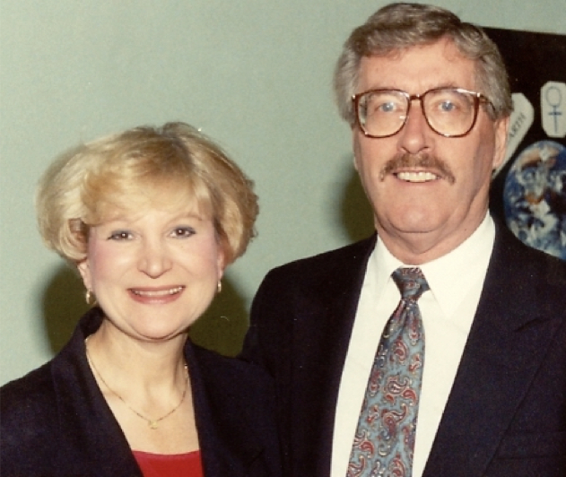

-2-MasterItem.svg)
Myra joined the congregation of Westminster Church in 1964 and became a
long-time friend not only
of Barry but also of our soprano soloist in those years, Mary Ann Taylor. Myra
and Mary Ann were
close friends right up to Myra’s passing in 2008.
Don Menzies (see separate article on Don Menzies) then took over the job in
October and so his long
career at the Casavant keyboards started and continues to this day (now over 50
years of service,
one of the four longest serving musician’s in Westminster. The others, Herb Sadler (35 years),
Glen Harrison (50 years), and Roy Halstead, chorister (65 years).
In 1959 we gave our first presentation of Brahms’
Requiem
in March on Good Friday evening. with Glen and Barry as
our leaders. On December 20th, of that year when the choir
performed Saint Saën’s
Christmas Oratorio
the soloists were
Norma Lewiki, soprano, Dorothy Howard, alto, Bruce Linney,
tenor, and Doug Sommerville, baritone. There was one other
soprano soloist that morning, Betty McLeod (in 1961,
she became Betty Halstead!).
By 1964, Phyllis Thompson had replaced Norma Lewiki,
and Ted Marshall had replaced Doug. By September that
year Phyllis resigned and Norma Vadeboncoeur became
soprano soloist.
In March the choir presented Vivaldi’s
Gloria
. And then for some reason even our leader,
Glen Harrison, couldn’t really explain we did it again in November.
Which was then followed by …

Above: Phyllis Thompson & Glen Harrison.